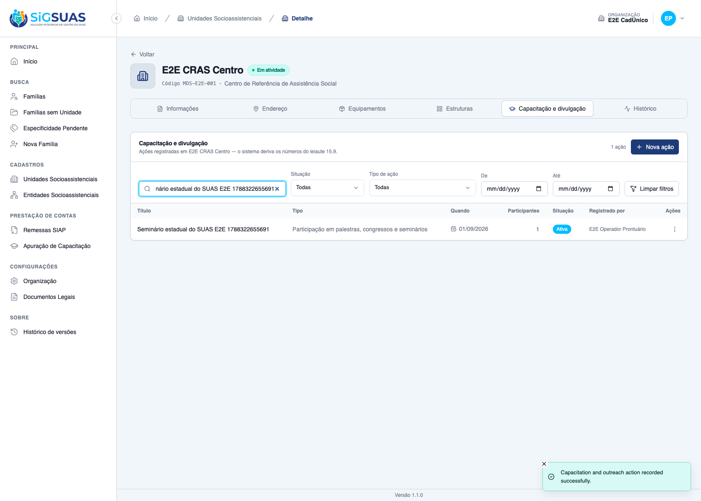
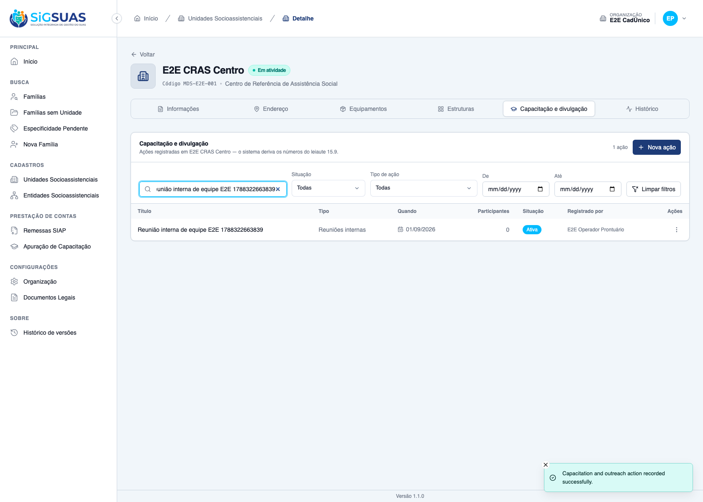
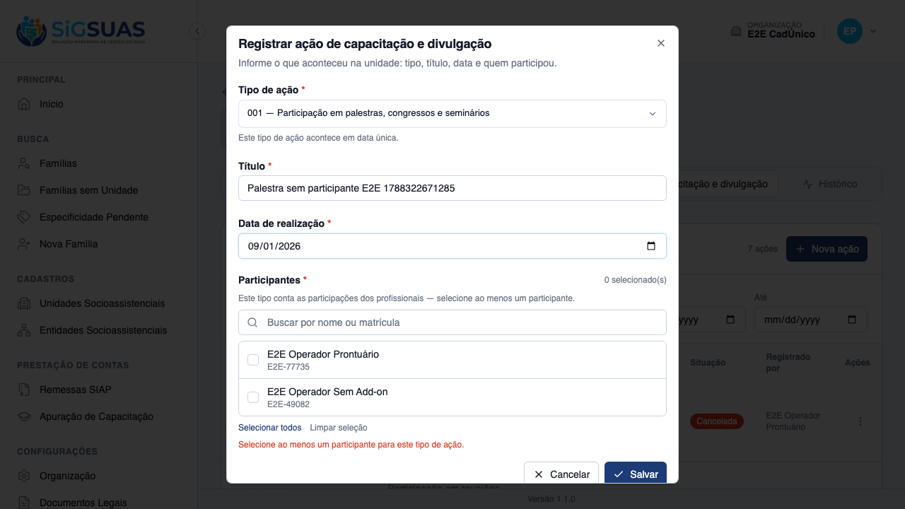
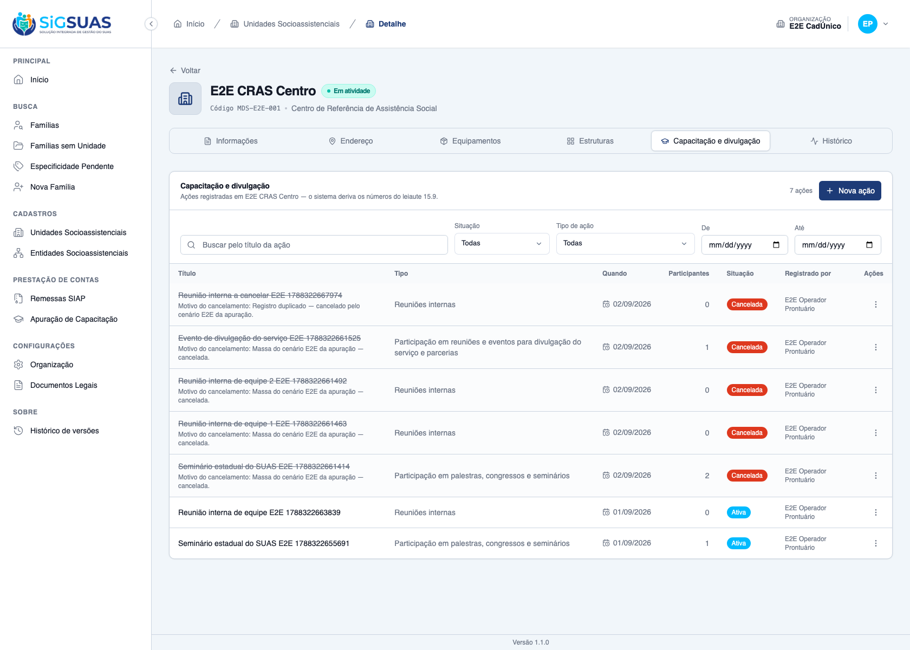
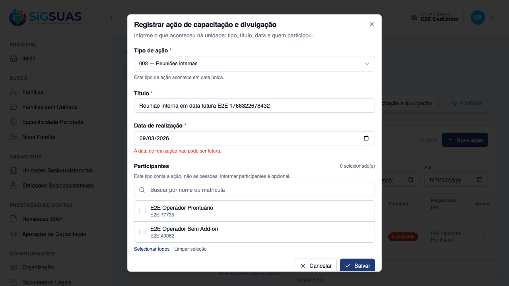
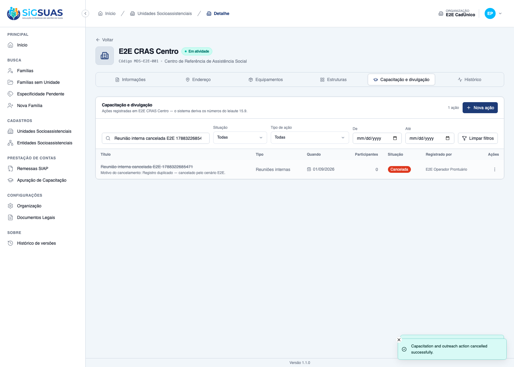
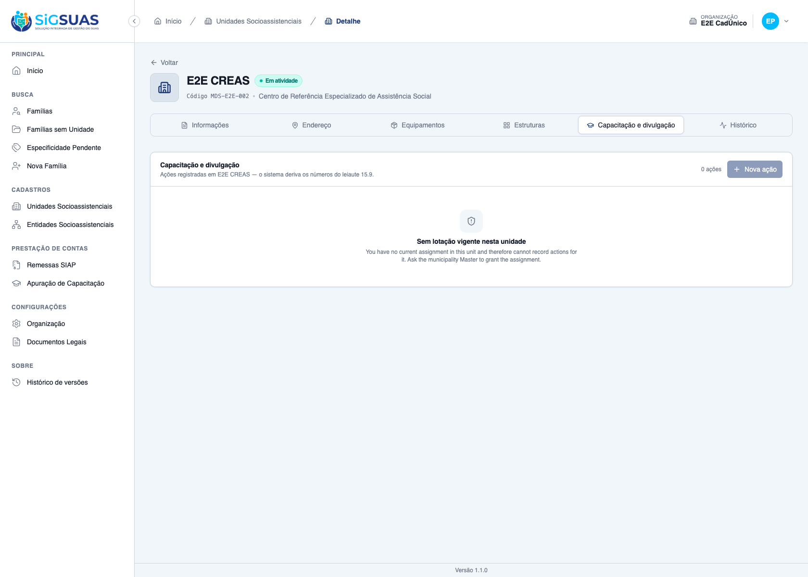

Relatório de Critérios de Aceite — US-CAPAC-02
Resumo
Doze critérios. Seis com evidência no navegador (aba “Capacitação e divulgação” da unidade, guard client, operador com lotação vigente) gravada pelos 6 casos de tests/client/capacitation-actions.spec.ts, todos aprovados — CA01, CA02, CA03, CA08, CA10 e CA11 — e todos com contraparte na suíte Pest. Os outros seis (CA04, CA05, CA06, CA07, CA09 e CA12) são regras de backend sem tela dedicada nesta massa e ficam com a evidência automatizada do anexo. Nenhum critério ficou sem evidência; nenhum critério foi declarado atendido sem prova. Complemento de 04/09/2026: o apêndice passou a incluir também a suíte de apuração, que é onde se provam as metades de CONTAGEM do CA05 (o curso em andamento soma mês a mês) e do CA10 (a ação cancelada sai dos contadores). O anexo fecha com 72 testes e 307 asserções, todos verdes.
| CA | Critério | Status |
|---|---|---|
| CA01 | Registrar participação em seminário (happy path) | ATENDIDO · navegador + automatizado |
| CA02 | Reunião interna não exige participantes | ATENDIDO · navegador + automatizado |
| CA03 | Palestra exige ao menos um participante | ATENDIDO · navegador + automatizado |
| CA04 | Curso pede período | ATENDIDO · automatizado |
| CA05 | Curso em andamento | ATENDIDO · automatizado |
| CA06 | Participante precisa ter lotação vigente na data | ATENDIDO · automatizado |
| CA07 | Mesmo profissional não entra duas vezes | ATENDIDO · automatizado |
| CA08 | Data futura recusada | ATENDIDO · navegador + automatizado |
| CA09 | Retroativo em período já declarado | ATENDIDO · automatizado |
| CA10 | Cancelar em vez de excluir | ATENDIDO · navegador + automatizado |
| CA11 | Operacional não registra em unidade onde não tem lotação | ATENDIDO · navegador + automatizado |
| CA12 | Isolamento entre municípios | ATENDIDO · automatizado |
CA01 — Registrar participação em seminário (happy path) ATENDIDO · navegador + automatizado
Critério (Gherkin): Dado que sou Operacional do Tenant com lotação vigente no "CRAS Centro" Quando eu enviar POST /api/client/social-units/{cras-centro}/capacitation-actions com type = "001", title = "Seminário estadual do SUAS", occurred_on = ontem e participants = [uuid1, uuid2, uuid3] Então recebo 201 E a ação consta na unidade com 3 participantes, created_by = meu user_id, created_by_label = meu nome e created_at preenchido
Como foi testado: Como Operacional com lotação vigente no E2E CRAS Centro: abrir /app/unidades/{uuid}?tab=capacitation → “Nova ação” → tipo 001 → título único → data de ontem (o preenchimento dispara o GET …/participant-candidates daquela data) → marcar um participante → salvar → localizar a ação pela busca.
- A ação é criada (201) e aparece na listagem da unidade com data, tipo e participantes.
- A coluna “Registrado por” traz o nome do autor — o registro é assinado e datado (RN12).
- A linha carrega data-status="active".
- A lista de participantes ofertada pela tela é a dos profissionais com lotação vigente NA DATA escolhida (F5).
- Pest: “registra seminario com tres participantes, autor e data de lancamento”.

CA02 — Reunião interna não exige participantes ATENDIDO · navegador + automatizado
Critério (Gherkin): Dado que o tipo "003" (Reuniões internas) tem counting_mode = "event" Quando eu enviar o registro com título e data, sem participants Então recebo 201 E a ação passa a contar como 1 evento no período (US-CAPAC-03)
Como foi testado: Mesmo fluxo, tipo 003 (counting_mode = event), sem selecionar ninguém. O caso assevera o texto que a tela mostra ao escolher esse tipo, e depois salva.
- A tela explica antes do envio: “Este tipo conta a ação, não as pessoas. Informar participantes é opcional.”
- A ação é salva sem participante nenhum e aparece na listagem com data-status="active".
- Pest: “registra reuniao interna sem participantes quando o tipo conta eventos”.

CA03 — Palestra exige ao menos um participante ATENDIDO · navegador + automatizado
Critério (Gherkin): Dado que o tipo "001" tem counting_mode = "participation" Quando eu enviar o registro sem participants Então recebo 422 E a mensagem diz que esse tipo conta participações e precisa de ao menos um participante
Como foi testado: Tipo 001 (counting_mode = participation), com título e data, sem participante, e submeter. Duas evidências: a tela no momento da recusa (print “-erro-participante-obrigatorio”) e o estado final, após descartar o formulário.
- Antes do envio a tela já explica a contagem: “Este tipo conta as participações dos profissionais — selecione ao menos um participante.”
- Ao submeter, o erro “Selecione ao menos um participante para este tipo de ação.” aparece e o formulário permanece aberto — nada foi gravado.
- Pest: “recusa palestra sem participante quando o tipo conta participacoes” (422).


CA04 — Curso pede período ATENDIDO · automatizado
Critério (Gherkin): Dado que o tipo "005" tem date_mode = "period" Quando eu enviar occurred_on Então recebo 422 indicando que este tipo exige started_on (e opcionalmente ended_on) E quando eu enviar started_on sem ended_on, recebo 201
Como foi testado: Sem print nesta massa. O critério é sobre a validação de occurred_on × started_on para o tipo de date_mode = period; o spec do navegador exercita os tipos de data única (001 e 003) e não cobre o formulário do curso. Verificado no Pest: Tests\Feature\Client\CapacitationActionTest → “recusa data unica e aceita periodo aberto quando o tipo e de periodo”.
- Enviar occurred_on para o tipo 005 devolve 422 indicando a exigência de started_on.
- Enviar started_on sem ended_on devolve 201.
Evidência por cobertura automatizada — ver Anexo.
CA05 — Curso em andamento ATENDIDO · automatizado
Critério (Gherkin): Dado que uma profissional iniciou um curso em 10/06/2026 e ele não terminou Quando eu registrar a ação com started_on = 2026-06-10 e ended_on = null Então recebo 201 E a apuração a conta de junho em diante enquanto ended_on for nulo
Como foi testado: Sem print nesta massa (mesmo motivo do CA04). Verificado no Pest: “persiste o curso em andamento com ended_on nulo (CA05)”; a contagem “de junho em diante” está no anexo da US-CAPAC-03 (“conta o curso sem data de fim do inicio em diante”).
- A ação com started_on preenchido e ended_on nulo é aceita (201) e persistida como curso em andamento.
- A segunda metade do critério — “conta nos meses de junho em diante, enquanto não houver data de fim” — é regra de apuração e fica provada por <code>✓ it conta o curso sem data de fim do inicio em diante (CA05)</code>, do serviço de apuração, agora incluído no apêndice deste dossiê.
- O curso é o único tipo que registra estado e não evento: enquanto o fim não é informado, o profissional segue somando mês a mês, a partir do início.
Evidência por cobertura automatizada — ver Anexo.
CA06 — Participante precisa ter lotação vigente na data ATENDIDO · automatizado
Critério (Gherkin): Dado que registro uma ação de 10/08/2026 no "CRAS Centro" Quando eu incluir um participante cuja lotação naquela unidade começou em 20/08/2026 Então recebo 422 com error_code "participant_without_active_assignment" E a mensagem nomeia o profissional e a data E nada é gravado (transação)
Como foi testado: Sem print da recusa. Pela tela é impossível chegar ao 422: o formulário só oferece como candidatos os profissionais com lotação vigente na data escolhida (essa consulta por data é visível no caso do CA01). O erro participant_without_active_assignment e a atomicidade da transação são verificados no Pest: “recusa participante sem lotacao vigente na data e nao deixa acao orfa”, mais as 12 asserções de fronteira de CapacitationParticipantValidatorTest.
- Participante sem lotação vigente na data devolve 422 com error_code participant_without_active_assignment.
- A mensagem nomeia o profissional e a data; nada é gravado (transação).
- Fronteiras testadas: lotação iniciada depois da data, encerrada no dia (fronteira aberta), lotação em outra unidade do mesmo município e profissional de outro município.
Evidência por cobertura automatizada — ver Anexo.
CA07 — Mesmo profissional não entra duas vezes ATENDIDO · automatizado
Critério (Gherkin): Dado que envio participants com o mesmo uuid repetido Quando eu salvar Então recebo 422 (regra distinct) E, em corrida, o índice único (capacitation_action_id, tenant_professional_id) impede a duplicidade
Como foi testado: Sem print. A tela usa checkboxes — não há como marcar o mesmo profissional duas vezes, então a duplicidade só existe no plano da API. Verificado no Pest em dois níveis, como o próprio Gherkin pede: “recusa o mesmo profissional repetido na lista de participantes (regra distinct)” e “barra a duplicidade no banco pelo indice unico da dupla acao/profissional”.
- Lista com uuid repetido devolve 422 (regra distinct).
- Em corrida, o índice único (capacitation_action_id, tenant_professional_id) impede a duplicidade no banco.
Evidência por cobertura automatizada — ver Anexo.
CA08 — Data futura recusada ATENDIDO · navegador + automatizado
Critério (Gherkin): Dado que registro uma ação de data única Quando eu informar occurred_on posterior a hoje Então recebo 422
Como foi testado: Tipo 003 de propósito (contagem por evento: sem exigência de participante, o único motivo possível de recusa é a data). O caso confere o atributo max do campo antes de qualquer envio e depois submete a data de amanhã.
- O campo de data já declara o teto na marcação (max = hoje) — a tela recusa antes de perguntar.
- Ao submeter data futura, aparece “A data de realização não pode ser futura.” e o formulário continua aberto.
- Pest: “recusa acao com data posterior a hoje (CA08)” (422).


CA09 — Retroativo em período já declarado ATENDIDO · automatizado
Critério (Gherkin): Dado que existe siap_remittances com exercise = 2026, reference_month = 7 e status = "completed" Quando eu registrar uma ação com occurred_on = 2026-07-22 Então recebo 201 E o corpo traz warning.code = "remittance_already_generated" E a mensagem informa que o contador de 07/2026 mudou e a remessa precisa ser gerada novamente
Como foi testado: Sem print. O aviso depende de existir uma siap_remittances concluída para a referência da data — massa que a stack de evidências não tem e que o spec do navegador não cria. Verificado no Pest: “salva o retroativo e avisa que a remessa da referencia ja foi gerada”, mais as 7 asserções de CapacitationRemittanceWarningServiceTest (inclusive a derivação de uma referência por mês coberto por um curso).
- A ação retroativa é salva (201) e o corpo traz warning.code = remittance_already_generated.
- A mensagem informa a referência (MM/AAAA) cujo contador mudou e que a remessa precisa ser gerada de novo.
- O aviso não vaza entre municípios nem dispara para remessa ainda não concluída.
Evidência por cobertura automatizada — ver Anexo.
CA10 — Cancelar em vez de excluir ATENDIDO · navegador + automatizado
Critério (Gherkin): Dado que registrei uma ação por engano Quando eu enviar PATCH .../capacitation-actions/{uuid}/cancel com cancellation_reason Então recebo 200 com status = "cancelled", cancelled_at e cancelled_by preenchidos E a ação continua aparecendo na listagem, marcada E deixa de contar na apuração E não existe rota DELETE para o recurso
Como foi testado: O caso cria a própria massa (uma reunião interna), abre o menu da linha, assevera a ausência de “Excluir/Remover/Apagar”, aciona “Cancelar ação”, confere o texto do diálogo, informa o motivo e confirma — observando o PATCH …/cancel.
- O menu da linha não oferece exclusão: cancelar é o único caminho de reversão (D04).
- O diálogo avisa, antes de confirmar, que a ação “continua na listagem, marcada como cancelada”.
- O PATCH responde 200; a linha passa a data-status="cancelled", exibe o selo “Cancelada” e o motivo informado.
- A ação continua visível na listagem — some da apuração, não da tela (RN09).
- Pest: “cancela com motivo, mantem a acao listada e recusa o segundo cancelamento” e “nao expoe rota DELETE para o recurso (CA10/D04)”.
- A parte “deixa de contar nos contadores do período” fica provada por <code>✓ it nao conta acao cancelada, e a unidade fica sem registro no periodo</code>, do serviço de apuração, agora incluído no apêndice.
- Os dois lados do cancelamento ficam demonstrados juntos: a ação permanece na listagem, marcada, e sai da contagem — sem ser apagada.

CA11 — Operacional não registra em unidade onde não tem lotação ATENDIDO · navegador + automatizado
Critério (Gherkin): Dado que sou Operacional lotado apenas no "CRAS Centro" Quando eu enviar POST em /social-units/{creas}/capacitation-actions Então recebo 403 com error_code "no_active_assignment_in_unit" E a mensagem orienta procurar o gestor Master
Como foi testado: Com o mesmo operador, abrir a aba de capacitação do E2E CREAS — unidade do mesmo município onde ele NÃO tem lotação.
- A tela mostra o painel “Sem lotação vigente nesta unidade”, que explica a negativa e orienta procurar o Master do município.
- Não houve desvio para a página genérica de 403: a URL permanece na unidade (negativa explicada, não “acesso negado”).
- Pest: “devolve 403 com error_code quando o Operacional nao tem lotacao” e “devolve 403 quando a lotacao do Operacional na unidade ja foi encerrada”.

CA12 — Isolamento entre municípios ATENDIDO · automatizado
Critério (Gherkin): Dado que sou usuário do município A Quando eu acessar uma unidade ou uma ação do município B Então recebo 404 E a listagem devolve apenas ações do município A
Como foi testado: Sem print, por impossibilidade de massa. A stack de evidências tem um tenant (E2E CadÚnico); provar isolamento exige dois municípios e um usuário de cada. É exatamente o que faz Tests\Feature\TenantIsolation\CapacitationActionIsolationTest (6 casos, todos no anexo).
- 404 ao ler unidade de outro município, ao registrar nela, ao abrir e ao cancelar ação de outro município.
- A listagem devolve apenas ações do próprio município.
- Os candidatos a participante não alcançam profissionais de outro município.
Evidência por cobertura automatizada — ver Anexo.
Observações e ressalvas
Como estas evidências foram produzidas (e por que isso importa)
Nenhum print foi tirado à mão. Cada imagem deste dossiê foi gravada pelo mesmo caso Playwright que verifica o critério, executado com CAPTURE_EVIDENCE=1 (e2e/helpers/evidence.ts): a foto só é salva quando o caso passa. Se uma asserção cai, não existe imagem — logo, a presença do arquivo é ela própria parte da prova. Sem essa variável de ambiente a suíte roda exatamente como antes, sem gravar nada.
Quando um caso cobre mais de um critério, o mesmo instante é salvo com um nome por critério (ex.: ca02-…, ca03-… e ca04-… são a mesma tela).
Mensagens da API em inglês sobre UI em pt-BR (anterior a esta HU)
Alguns textos vindos da API aparecem em inglês nos prints (o diálogo de recusa da exclusão, o painel “Sem lotação vigente”, o toast de cancelamento). É um comportamento de plataforma, comum a todos os módulos e anterior a este épico: o SetLocale da API resolve o idioma pelo Accept-Language do navegador (o Chromium do Playwright envia en-US) e nenhum dos frontends envia X-Locale. O que os critérios afirmam — a recusa, a explicação e a orientação — está atendido; a tradução é dívida técnica registrada à parte.
Onde o anexo automatizado foi executado
O anexo Pest foi rodado no host, em api/, com DB_CONNECTION=sqlite DB_DATABASE=:memory:. Rodar a mesma suíte dentro do contêiner da stack E2E não é seguro: as variáveis de ambiente do contêiner vencem os <env> do phpunit.xml, e o RefreshDatabase recria o banco esuas_e2e — isto é, apaga a massa da própria stack de evidências.
Complemento de 04/09/2026 — a suíte de apuração entrou no apêndice
O dossiê original cobria com rigor o ato de registrar: cada critério do chamado tinha teste nomeado pelo proprio numero, de CA01 a CA12. Restava uma costura fina: dois criterios nao terminam no registro, terminam na contagem. O CA05 exige que o curso sem data de fim conte nos meses seguintes, e o CA10 exige que a acao cancelada deixe de contar — e o filtro do anexo cobria registro, participantes e remessa, mas nao a apuracao.A execucao foi refeita acrescentando a suite de apuracao, e os dois testes que fecham essas metades passaram a acompanhar o documento, citados nominalmente nos respectivos criterios. Nenhum resultado anterior foi alterado.
Anexo — Cobertura automatizada (Pest, --filter="CapacitationAction(?!Type)|CapacitationParticipant|CapacitationRemittance|CapacitationTally") — 72 testes, 307 asserções, todos verdes
PASS Tests\Unit\Services\Capacitation\CapacitationActionWriteTest ✓ it registra a ação com participantes, autor congelado e tenant da u… 0.79s ✓ it não deixa ação órfã quando um participante não tem lotação vigen… 0.11s ✓ it sincroniza a lista completa na edição e registra o diff sem PII… 0.04s ✓ it preserva os participantes quando a edição não menciona a lista 0.03s ✓ it cancela com motivo e recusa o segundo cancelamento (CA10/F3) 0.05s ✓ it impede o mesmo profissional duas vezes na mesma ação (RN07 no sc… 0.03s PASS Tests\Unit\Services\Capacitation\CapacitationParticipantValidatorTest ✓ it aceita participante com lotação aberta iniciada antes da data (Q… 0.07s ✓ it recusa participante cuja lotação começou depois da data da ação… 0.03s ✓ it trata end_date como fronteira ABERTA: encerrar no dia da ação já… 0.03s ✓ it recusa lotação vigente em OUTRA unidade do mesmo município 0.03s ✓ it aceita lotação que intersecta o período do curso, inclusive no ú… 0.03s ✓ it recusa lotação encerrada no início do período do curso (fronteir… 0.03s ✓ it aceita curso em andamento (ended_on nulo) enquanto a lotação est… 0.02s ✓ it recusa profissional inativo ou de outro município, sem vazar CPF 0.03s ✓ it nomeia o profissional e a data na recusa, e para no PRIMEIRO pro… 0.03s ✓ it devolve null quando a lista inteira passa 0.03s ✓ it candidatos e checagem por participante concordam em toda a matri… 0.04s ✓ it a Rule falha com a mensagem da recusa e passa em silêncio quando… 0.04s PASS Tests\Unit\Services\Capacitation\CapacitationRemittanceWarningServiceTest ✓ it avisa quando a referência da data já tem remessa gerada 0.03s ✓ it não avisa quando a remessa ainda não foi concluída 0.02s ✓ it não avisa por remessa de OUTRO município 0.04s ✓ it deriva uma referência por mês coberto pelo período do curso 0.04s ✓ it avisa por qualquer mês do período que já tenha remessa gerada 0.03s ✓ it considera também a janela ANTERIOR quando a data da ação muda de… 0.03s ✓ it formata a referência no padrão MM/AAAA do Manual 0.03s PASS Tests\Unit\Services\Capacitation\CapacitationTallyServiceTest ✓ it apura participacoes, eventos e cursos de uma unidade no mes (CA0… 0.06s ✓ it devolve sempre os cinco contadores, na ordem do leiaute e com a… 0.04s ✓ it conta reuniao interna por EVENTO, ignorando quantos participaram… 0.05s ✓ it conta o curso em TODOS os meses em que esteve em andamento (CA04… 0.03s ✓ it conta o curso sem data de fim do inicio em diante (CA05) 0.03s ✓ it conta uma vez a profissional que esta em dois cursos simultaneos… 0.04s ✓ it nao conta acao cancelada, e a unidade fica sem registro no perio… 0.04s ✓ it conta a acao retroativa no mes em que ela OCORREU, nao no do lan… 0.03s ✓ it devolve contador de tipo INATIVADO, porque o campo e do leiaute… 0.03s ✓ it sinaliza has_no_records apenas quando NAO existe registro algum… 0.03s ✓ it ordena as unidades por nome e ignora id inexistente (RN11) 0.03s ✓ it nao mistura as acoes de outra unidade nem de outro municipio 0.04s ✓ it recusa mes fora de 1–12 (D08) 0.03s PASS Tests\Feature\Client\CapacitationActionTest ✓ it registra seminario com tres participantes, autor e data de lanca… 0.10s ✓ it registra reuniao interna sem participantes quando o tipo conta e… 0.04s ✓ it recusa palestra sem participante quando o tipo conta participaco… 0.05s ✓ it recusa data unica e aceita periodo aberto quando o tipo e de per… 0.05s ✓ it persiste o curso em andamento com ended_on nulo (CA05) 0.04s ✓ it recusa participante sem lotacao vigente na data e nao deixa acao… 0.05s ✓ it recusa o mesmo profissional repetido na lista de participantes (… 0.04s ✓ it barra a duplicidade no banco pelo indice unico da dupla acao/pro… 0.04s ✓ it recusa acao com data posterior a hoje (CA08) 0.05s ✓ it salva o retroativo e avisa que a remessa da referencia ja foi ge… 0.05s ✓ it cancela com motivo, mantem a acao listada e recusa o segundo can… 0.06s ✓ it nao expoe rota DELETE para o recurso (CA10/D04) 0.04s ✓ it devolve 403 com error_code quando o Operacional nao tem lotacao… 0.06s ✓ it devolve 403 quando a lotacao do Operacional na unidade ja foi en… 0.04s ✓ it permite ao Master registrar em qualquer unidade do municipio (CA… 0.06s PASS Tests\Feature\Client\CapacitationTallyTest ✓ it devolve os cinco contadores com a forma de contagem e o rotulo d… 0.07s ✓ it sinaliza a unidade sem nenhum registro com os cinco contadores z… 0.05s ✓ it distingue "nao registrou nada" de "registrou algo que conta zero… 0.05s ✓ it devolve ao Operacional apenas as unidades de lotacao vigente (CA… 0.06s ✓ it devolve 404 ao Operacional que filtra unidade fora da sua lotaca… 0.05s ✓ it devolve 200 com lista vazia ao Operacional sem lotacao nenhuma (… 0.05s ✓ it devolve ao Master todas as unidades do municipio, ordenadas por… 0.04s ✓ it nao expoe nenhuma rota de escrita para o recurso (RN03/D09) 0.04s ✓ it recusa mes fora de 1-12 e exercicio fora de faixa (D08/§10) 0.05s ✓ it exige a permissao capacitation-tallies.index 0.04s PASS Tests\Feature\TenantIsolation\CapacitationActionIsolationTest ✓ it devolve 404 ao ler a unidade de outro municipio (CA12) 0.05s ✓ it devolve 404 ao registrar em unidade de outro municipio (CA12) 0.04s ✓ it devolve 404 ao abrir uma acao de outro municipio (CA12) 0.04s ✓ it devolve 404 ao cancelar uma acao de outro municipio (CA12) 0.04s ✓ it lista apenas as acoes do proprio municipio (CA12) 0.04s ✓ it nao alcanca profissionais de outro municipio como candidatos a p… 0.05s PASS Tests\Feature\TenantIsolation\CapacitationTallyIsolationTest ✓ it devolve 404 quando o Master de A filtra a apuracao por unidade d… 0.05s ✓ it apura apenas unidades do proprio municipio, sem somar acoes de B… 0.05s ✓ it nao vaza a unidade de B nem quando o Master de A e Master tambem… 0.06s Tests: 72 passed (307 assertions) Duration: 4.70s